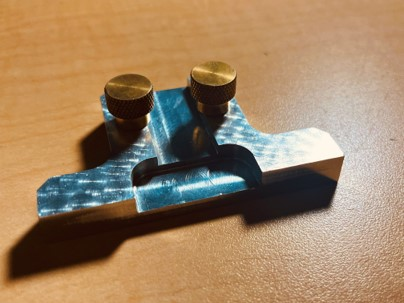
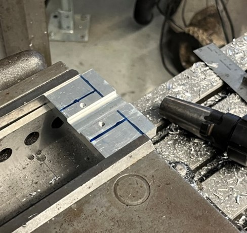
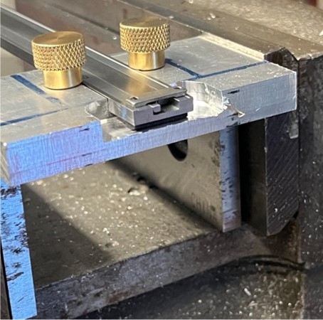
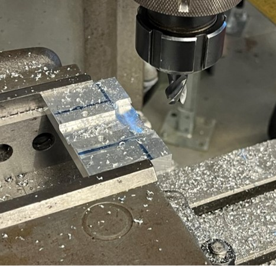
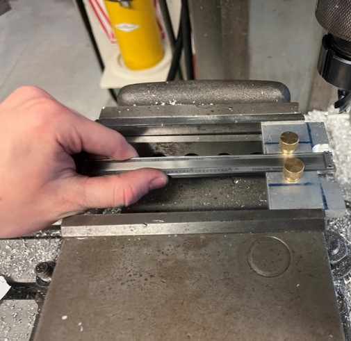
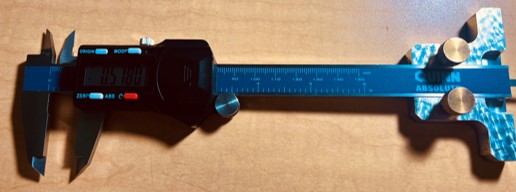
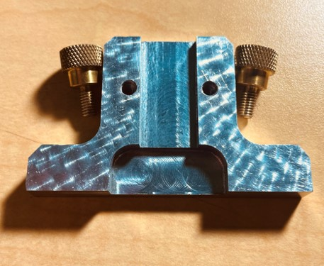

During this project, I used a Prototrak Mill to produce an attachment for a set of vernier calipers. This attachment allows the user to measure the depth of holes with a wider diameter than a traditional set of calipers allows. To successfully complete this project, I had to redesign a part made for dial calipers in order to be able to attach to a set of modern digital calipers. This involved using a custom set of retaining screws and altering various dimensions based on the calipers.
To begin production of the part, I first began by cutting a block of aluminum down to size. I then faced both the top and bottom of the part, giving me a leveled surface to work from. The next step was cutting the trench the main body of the calipers would connect to. This trench had to be widened to support digital calipers. I then used a #21 drill to create two holes on either side of the channel. I then tapped each hole and inserted two screws. The screws were positioned precisely so that the overhang from their heads would clamp onto the calipers, holding them in the correct position when tightened. After finishing the remainder of the part, I placed it into a drill press and utilized a special tool to get a circular brush finish on the top and bottom surfaces.
The caliper attachment worked perfectly in the end, meeting all design requirements and manufacturing tolerances, allowing for the end user to easily measure the depth of holes larger than the factory end of the calipers. This project demonstrates my ability to produce parts successfully on a mill, by proving I can manufacture parts that meet all design / functional requirements and tolerances.
